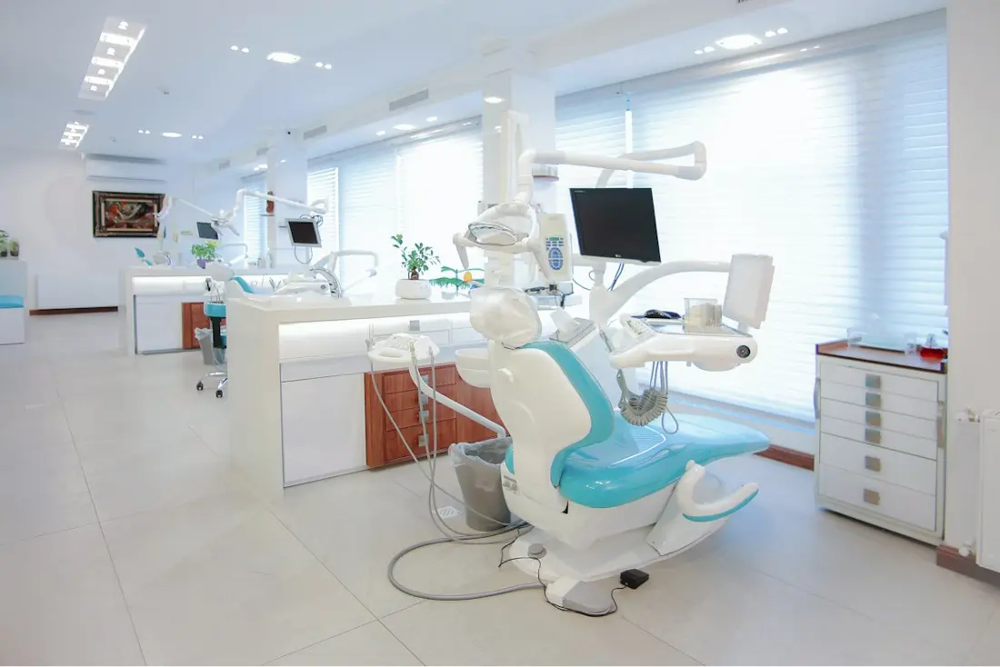

مراقبت و ترمیم
مراقبت و ترمیمتوجه به سلامت و حفظ دندان
بررسی وضعیت دندان و گفتوگو دربارهٔ مسیرهای مراقبتی و ترمیمی.
آشنایی با این حوزه ↖پشت هر تصمیم درمانی، شنیدن دغدغههای شما و بررسی دقیق شرایط قرار دارد. اینجا با حوزههای فعالیت تیم و شیوهٔ همراهی در مسیر مراجعه آشنا میشوید.
پرسش شما بخشی از گفتوگوی درمان است.
سؤالها و نگرانیهایتان را با زبان خودتان مطرح کنید.
گزینهها و مراحل را پیش از تصمیم مرور کنید.
دربارهٔ مراقبت و قدم بعدی توضیح دریافت کنید.
این کارتها حوزههای خدمات را معرفی میکنند. مشخصات پزشکان واقعی، پس از دریافت اطلاعات تأییدشدهٔ کلینیک درج میشوند.
مراقبت و ترمیمبررسی وضعیت دندان و گفتوگو دربارهٔ مسیرهای مراقبتی و ترمیمی.
آشنایی با این حوزه ↖
زیبایی و بازسازیشناخت انتظار شما و بررسی گزینههای مرتبط با لبخند و جایگزینی دندان.
آشنایی با این حوزه ↖ مراجعه و پیشگیری
مراجعه و پیشگیریآشنایی با نیازهای مراقبتی و برنامهٔ پیگیری متناسب با هر فرد.
آشنایی با این حوزه ↖تصاویر آرشیویاند و هویت اعضای تیم واقعی را نشان نمیدهند.
برای تجربهای قابل فهم، باید بدانید هر مرحله چرا پیشنهاد شده و قدم بعدی چیست. در صورت نیاز به همکاری حوزههای مختلف، دربارهٔ نقش هر بخش توضیح بخواهید.
مسیر اولین مراجعه ↖شرح مشکل، سوابق مرتبط و انتظار شما نقطهٔ شروع است.
روشها، محدودیتها و مراحل پیشنهادی روشن میشوند.
زمانبندی و راه پیگیری را پیش از پایان جلسه مرور کنید.
اگر تجربهٔ ناخوشایند قبلی دارید یا دربارهٔ درمان نگران هستید، آن را بیان کنید. شناخت این موضوع به گفتوگوی بهتر دربارهٔ روند مراجعه کمک میکند.
همین جمله میتواند شروع خوبی برای جلسهٔ مشاوره باشد.
پرسشهای پیش از مراجعه ↖اطلاعات حرفهای و مجوز مرتبط را از منابع معتبر بررسی کنید.
بپرسید موضوع مراجعهٔ شما در کدام حوزه قرار میگیرد.
سؤالها، انتظارات و نگرانیهای خود را روشن مطرح کنید.
دربارهٔ مراحل بعدی، زمان حضور و نحوهٔ پیگیری توضیح بخواهید.
چند پاسخ برای آشنایی با ساختار این نمونهکار و مسیر مراجعه.
این وبسایت نمونهکار طراحی است. برای جلوگیری از معرفی افراد یا سوابق ساختگی، نام و مشخصات حرفهای پس از دریافت اطلاعات واقعی درج میشوند.
موضوع مراجعه یا انتظار خود را بیان کنید. انتخاب قطعی مسیر درمان با ارزیابی دندانپزشک انجام میشود.
پرسشها، سوابق مرتبط و اطلاعات داروهای مصرفی را آماده کنید. دربارهٔ همراه داشتن پروندهٔ قبلی از پذیرش سؤال کنید.
مسیر مراجعه و انتخاب خدمات را از همینجا مرور کنید.